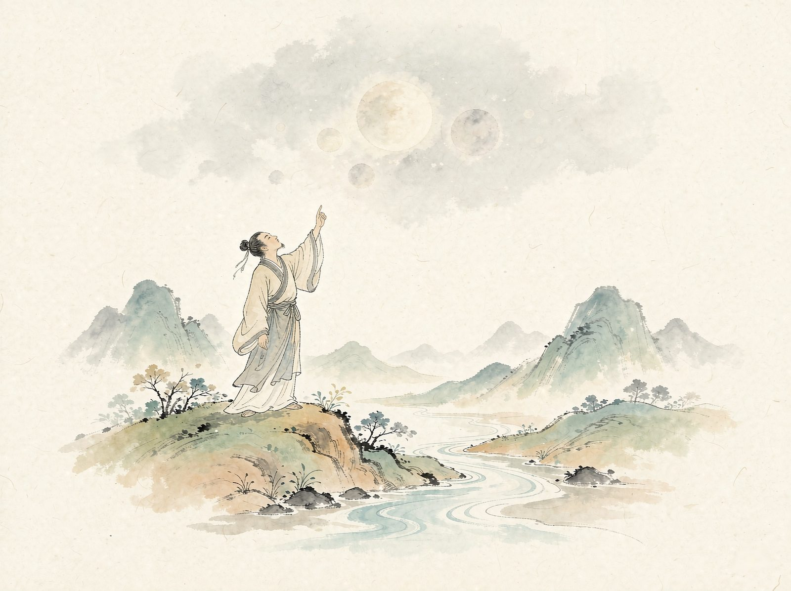

自羲农，至黄帝
承接上句“考世系，知终始”，正式开启上古史脉络的研读。
羲，伏羲氏；农，神农氏；黄帝，轩辕氏。
此句划定上古圣王脉络的开端，是华夏文明人文肇始的第一阶段。
伏羲画八卦，仰观俯察，主动开显阴阳变易之象，把天地流转的道理向外显发，启人观象取则；神农尝百草、教稼穑，定农耕，辨物性，安顿生民的衣食与康养；黄帝造制度、立百官、定礼乐、统合部族，收敛纷乱族群，将外显的象理、厚生的滋养，收束、凝定为稳定、内敛的人世秩序框架。
一脉相承：伏羲向外开天道之象，神农向外广厚民生，黄帝向内收敛，固化秩序。
对比：考世系，知终始 / 自羲农，至黄帝
上一课确立读史心法：长线追溯世系、察周期终始；本课沿着这条长线，溯源至华夏人文的起点。羲、农、黄帝，不是单纯神话古帝，而是文明演化的三个阶段符号。
伏羲，是向外的发起、开显，主动接通天地阴阳，立象以显道，属阳；
神农接续外施化育，播种、养育万民，同样属于阳的发用；
黄帝，是收敛、归束、规整，把散开的生机、万象，收拢成一套可长久传承的法度、组织、礼序，属阴。
阴阳逻辑重勘：伏羲为阳，黄帝为阴。阳主开、主显、发起造化；阴主收、主藏、凝定成规。由阳而阴，一开一收，文明肇基。
这也承接我们一贯的体系：羲为天道向外发起之显，农为厚生向外施化之用，黄帝为人世向内收束之载体。开、化、收，依次铺展。
对比前文阴阳太和：伏羲主动仰观俯察、显发大道，主出、主散，为阳；黄帝收敛纷乱、固化秩序，主入、主藏，为阴。阳以开天象之理，阴以凝人世之制，阴阳对举，文明由此成型。
勘破俗见：两类偏执。其一，把羲农黄帝全然当作神话传说，忽略其背后文明阶段的象征意义；其二，执着于史实考据细节、纠缠纪年，忽略其教化象征，偏离读史取鉴的本心。契合般若范式：佛说羲农黄帝，即非羲农黄帝，是名羲农黄帝。古圣记载是文明传承之筏；本心之中正才是本体。观文明肇始之迹，不执古史考据名相。
从伏羲、神农，再到黄帝，是华夏文明最早的脉络。
伏羲观天地画出八卦，向外探明阴阳变化的道理；
神农教会人们耕种，辨识草木，向外滋养众生；
黄帝建立制度，收拢部族，向内收敛，定下稳定的文明秩序。
一开一收，阴阳相配，文明就此扎根生长。


落到心上理解
顺着世系长线，从上古开端起读。
羲农黄帝的次第，对应心性修持的三层根基，同时配阴阳：
伏羲画卦（阳）：向外观察万象，发起观照，打开感知，建立阴阳辩证的认知框架，是向外开；
神农尝百草、兴农耕：持续向外施予、滋养，广种善根；
黄帝建制立序（阴）：待感知、生机充分打开之后，向内收敛、规整散乱心念，建立稳定的心念边界与章法。
修心也是这个顺序：先向外打开觉察分辨（阳），向外滋养自身与外缘，最后向内收束、守定秩序（阴）。开显、布化、收敛，阴阳往复，即是无住而行。
将三圣纯粹看作神话故事，无视文明象征
代表文明三阶段：开显、厚生、敛藏建制
执着考据细节、纠缠年份，舍本逐末
读史重在体察文明演化一开一收的阴阳理路
只重秩序收敛，不敢向外观照、生发
阳开阴敛缺一不可，先开后敛是天然次序
- 伏羲【阳】：仰观俯察，始画八卦，向外开显阴阳变化之理；
- 神农【阳之用】：教民稼穑，辨识百草，向外厚养生民之本；
- 黄帝【阴】：整合部族，创立制度礼乐，向内收敛，凝定人世文明秩序；
- 读史心法不变：考世系，知终始，看懂文明“阳开、阴收”的循环节律。
一、勘俗见。收敛、守规矩不是一开始就要压制感知，要先打开眼界、看清规律，再慢慢收拢、建立边界。
二、现代对照。自我成长，先学会觉察、向外探索学习，养护身心，最后沉淀下来，形成稳定的习惯与内心秩序。
三、承接常变主线。中正本心恒常不变（常）；上古文明的开创演化，是因缘一开一收显发的事相（可变之相）。
四、承接教与学二分。师长示范梳理上古文明源流，区分阳开、阴敛两层，属于施教一侧；学人以此反观自心，搭建自身修持次第，是自主修习。
承接选择力练习：阳开以明道，广布以厚生，阴敛以安身。
自羲农，至黄帝
一字义与句读
羲：伏羲氏；农：神农氏；黄帝：轩辕氏。此句开启上古世系，叙文明肇始三段：伏羲【阳】开象显道，神农广施厚生，黄帝【阴】收敛建制。
全句释义：上古世系，从伏羲、神农，一直到黄帝。沿着这条脉络，体察华夏文明“阳开、阴敛”的生发次第。
二命题考辨
（1）阴阳订正：伏羲阳，黄帝阴
伏羲，主开、出、显、发起。寂然之中，主动仰观俯察，把潜藏的阴阳之理，化作八卦符号，从无形之中显发出来，是阳德；
神农承接阳德，向外播撒、养育，属于阳的延伸、发用；
黄帝，主收、入、藏、规整。万象散开、生机勃发之后，人群容易散乱纷争，故以礼法、官制、礼乐收拢群生，把已经显发的道理，凝定成可传承、可持守的稳定架构，是阴德。
次序：阳先开，而后阴能收；若无伏羲向外开显大道，黄帝无物可收。一开一阖，阴阳成对。
（2）和我们整套三参体系的呼应
伏羲对应易学源头（阳，变易发起）；神农偏于道家厚生、摄养（阳之用）；黄帝建制，对应儒门礼序教化（阴，收敛持守）。
易、道、儒，在文明源头本是一体，一阳一阴开合而成，后世才分流展开。这也印证全书“易-道-佛三参、和合之辨”的底层格局。
（3）对照当下现代语境
做学问、做体系、自我建设，同样遵循这个次序：先向外观察、探索，提炼底层规律（伏羲阳开）；再向外实践、滋养根基（神农布化）；最后沉淀、收敛，搭建稳定流程、规则架构（黄帝阴敛）。跳过向外开显的阶段直接谈收敛规制，极易压抑生机、僵化死板。
（4）般若范式互参
古史圣王记载，是指月之筏。
联动三才五蕴太极空杯模型：中正自性是空杯本具之体；伏羲阳开、黄帝阴敛，是缘起生灭的开合相。知其为缘起之迹，不执着古制为唯一范式。
呼应“本乎数”：伏羲（阳，出、显），黄帝（阴，入、藏），一阳一阴，开合生化。
延伸义理：
《金刚经》应无所住而生其心：三圣都是应时而施教，随时代因缘开合治法，法无定法。
《道德经》道生之，德畜之，物形之，势成之：伏羲“道生之”（阳开），神农“德畜之”，黄帝敛而成形（阴藏）。
《坛经》佛法在世间：大道不离生民日用，开显、滋养、收敛，全部在当下世间落实。
三跨典互参（老庄、般若对照）
《道德经》万物并作，吾以观复：“并作”即是伏羲、神农阳开；“观复”即是黄帝阴敛归藏。
《庄子》古之人，在混茫之中：混茫是未开；伏羲开而显，黄帝收而固。
串联前文：以经子为衡鉴，长线考世系，自文明源头开启古史研读，守“阳开阴敛”的太极节律。
四和前面课程的张力
次第链条继续延伸：
首孝悌 → 次见闻 → 知某数，识某文 → 一而十，十而百 → 百而千，千而万 → 三才者，天地人 → 三光者，日月星 → 曰春夏，曰秋冬 → 此四时，运不穷 → 曰南北，曰西东 → 此四方，应乎中 → 曰水火，木金土 → 此五行，本乎数 → 十干者，甲至癸 → 十二支，子至亥 → 曰黄道，日所躔 → 曰赤道，当中权 → 赤道下，温暖极 → 我中华，在东北 → 曰江河，曰淮济 → 此四渎，水之纪 → 曰岱华，嵩恒衡 → 此五岳，山之名 → 古九州，今改制 → 称行省，三十五 → 曰仁义，礼智信 → 此五常，不容紊 → 地所生，有草木 → 此植物，遍水陆 → 有虫鱼，有鸟兽 → 此动物，能飞走 → 稻粱菽，麦黍稷 → 此六谷，人所食 → 马牛羊，鸡犬豕 → 此六畜，人所饲 → 曰喜怒，曰哀惧 → 爱恶欲，七情具 → 匏土革，木石金。丝与竹，乃八音 → 高曾祖，父而身 → 身而子，子而孙 → 自子孙，至玄曾 → 乃九族，人之伦 → 父子恩，夫妇从 → 兄则友，弟则恭 → 长幼序，友与朋 → 君则敬，臣则忠 → 此十义，人所同 → 凡训蒙，须讲究 → 详训诂，明句读 → 为学者，必有初 → 小学终，至四书 → 论语者，二十篇 → 群弟子，记善言 → 孟子者，七篇止 → 讲道德，说仁义 → 作中庸，子思笔 → 中不偏，庸不易 → 作大学，乃曾子 → 自修齐，至平治 → 孝经通，四书熟 → 如六经，始可读 → 诗书易，礼春秋 → 号六经，当讲求 → 有连山，有归藏 → 有周易，三易详 → 典谟训，诰誓命 → 号周书，七十篇 → 有国风，有雅颂 → 号四诗，当讽咏 → 诗既亡，春秋作 → 寓褒贬，别善恶 → 三传者，有公羊 → 有左氏，有谷梁 → 经既明，方读子 → 撮其要，记其事 → 五子者，有荀扬 → 文中子，及老庄 → 经子通，读诸史 → 考世系，知终始 → 自羲农，至黄帝
呼应“人不学，不知义”：知文明肇始、阳开阴敛、先显后藏的开合之义；
呼应“玉不琢，不成器”：以开合阴阳打磨自心，能开能收，不偏于放纵、不偏于枯守；
呼应“教之道，贵以专”：专守中正，顺着世系长线，体察阴阳开合的本源节律。